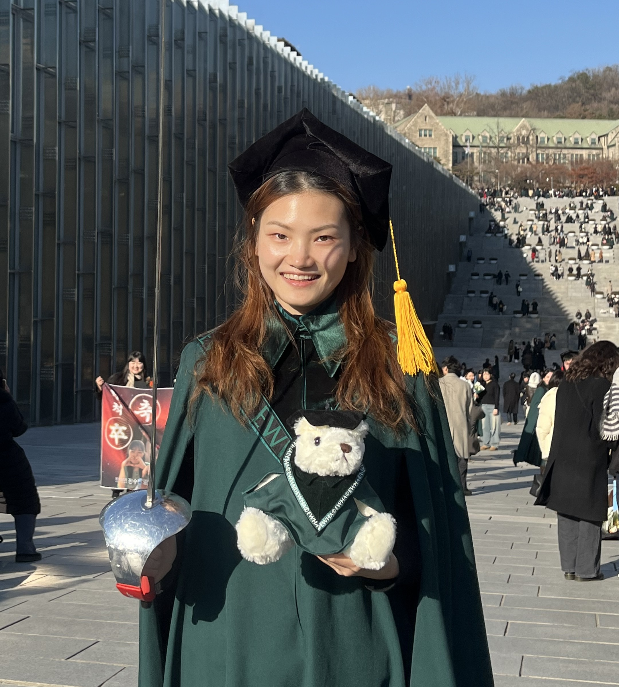
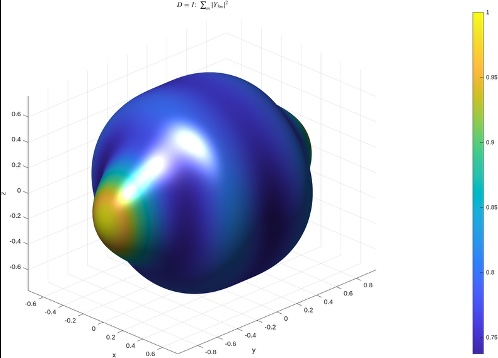
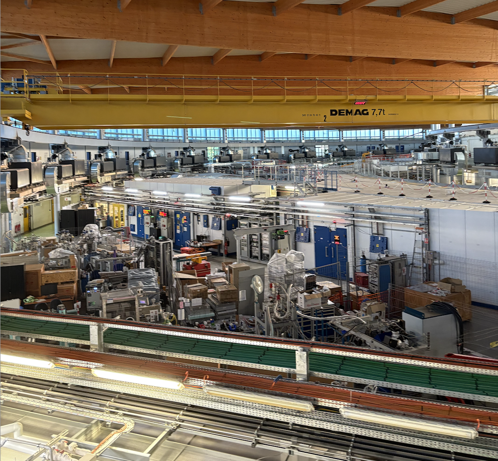
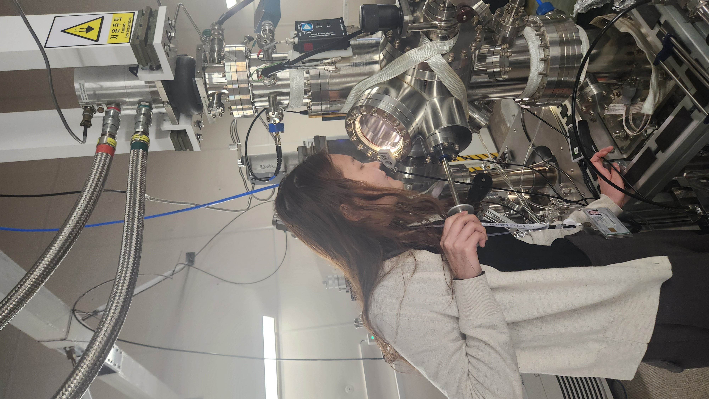
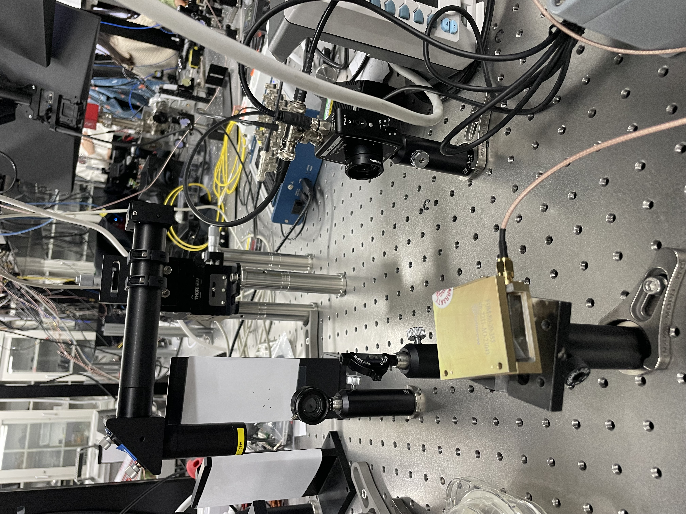
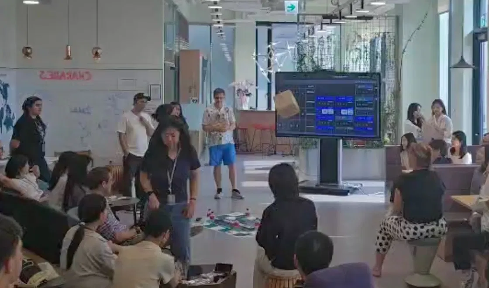
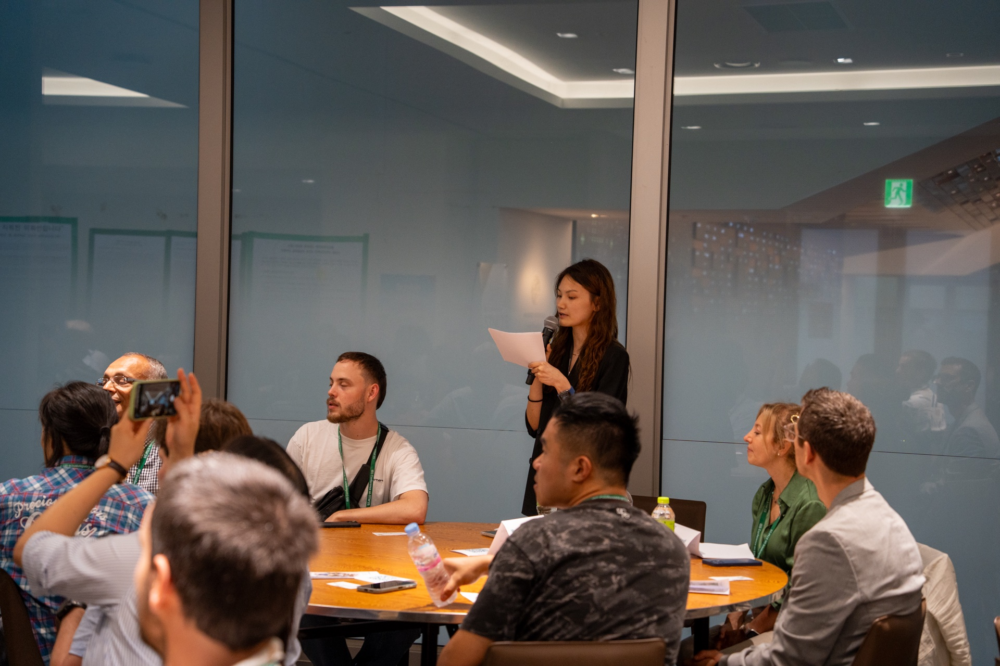
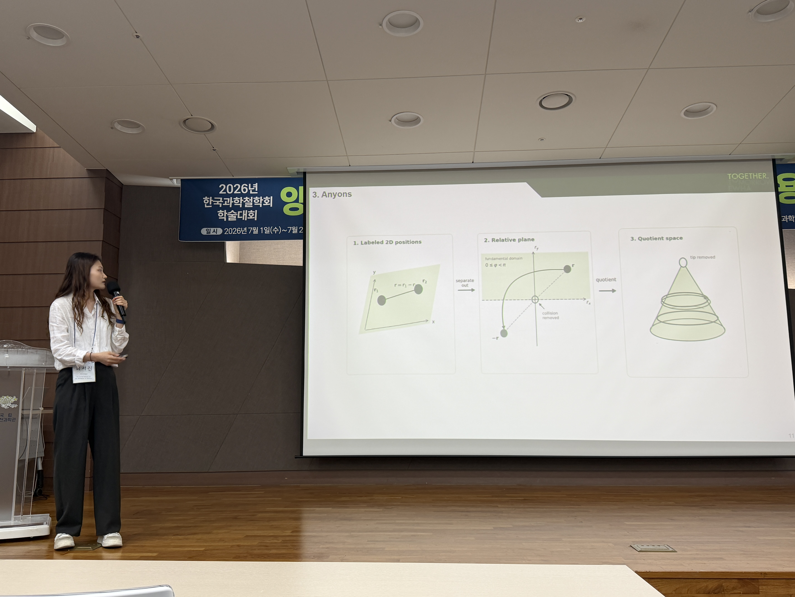
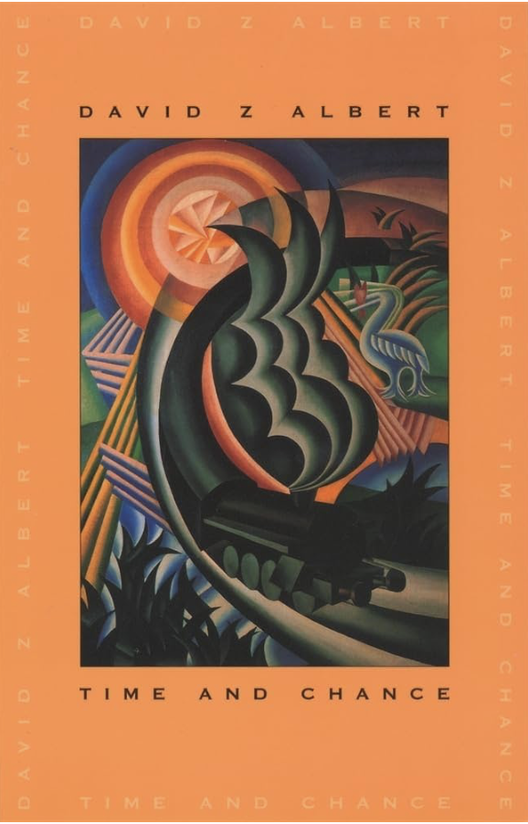

M.S. Researcher · IBS Center for Quantum Nanoscience · Seoul
I am an M.S. researcher at IBS Center for Quantum Nanoscience, Seoul, working on lanthanide atoms on surfaces as candidates for atomic-scale spin qubits. My work sits between experiment and theory: I build multiplet and crystal-field models in Quanty and fit them to XAS/XMCD and ESR-STM data with Bayesian optimization.
Alongside this, I take part in synchrotron beamtime experiments including a measurement of frustrated magnetic systems and my interests have gradually broadened from single-atom qubits toward quantum magnetic materials more generally.
I also care about what happens outside the lab — science outreach, philosophy of physics, and finding ways to connect physics to people who aren't already inside it.








General Physics Laboratory — guide undergraduates through experimental setup, measurements, and data analysis.
Mentored 40+ students in high school mathematics and physics. Currently teaching linear algebra using Friedberg, Insel & Spence.
Taught middle school mathematics in small-group classroom settings.